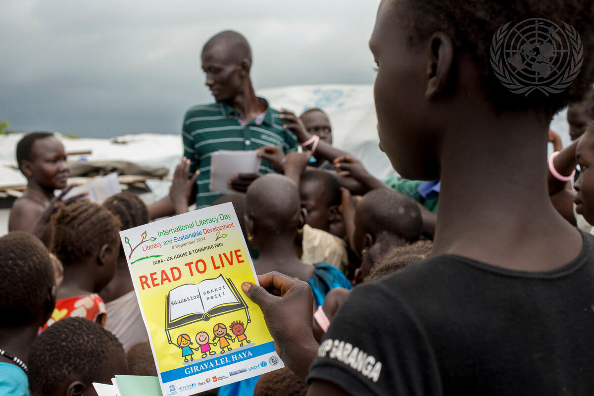
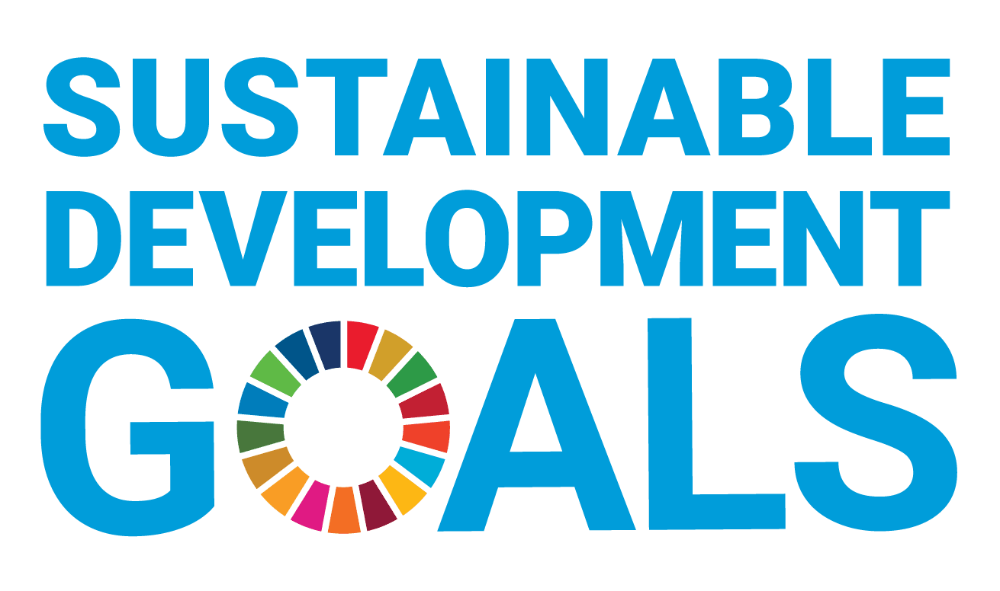

Quality Education
Overview
The United Nations Sustainable Development Goal (SDG) 4 aims to “ensure inclusive and equitable quality education and promote lifelong learning opportunities for all.” Education is a fundamental human right and plays a crucial role in fostering economic growth, reducing inequalities, and empowering individuals.

Targets And Indicators
-
Universal Primary and Secondary Education:
Ensure that all children complete free, equitable, and quality primary and secondary education.
-
Early Childhood Development & Pre-Primary Education:
Provide access to quality early childhood development, care, and pre-primary education.
-
Equal Access to Affordable Vocational and Higher Education:
Ensure equal opportunities for men and women to access affordable and quality technical, vocational, and higher education.
-
Skills for Employment & Entrepreneurship:
Increase the number of youth and adults with relevant skills for employment, decent jobs, and entrepreneurship.
-
Eliminate Gender Disparities & Ensure Inclusion:
End gender disparities and provide equal education access for vulnerable groups, including persons with disabilities and indigenous people.
-
Universal Literacy & Numeracy:
Ensure all youth and a substantial proportion of adults achieve literacy and numeracy.
-
Education for Sustainable Development:
Promote education that fosters sustainable development, human rights, gender equality, peace, and global citizenship.
-
Build & Upgrade Educational Facilities:
Improve education infrastructure to create inclusive and effective learning environments.
-
Increase Scholarships for Developing Countries:
Expand scholarships for students from developing countries to access higher education.
-
Increase Qualified Teachers:
Increase the supply of well-trained and qualified teachers, especially in developing regions.
The Sustainable Development Goals Report 2022: unstats.un.org/sdgs/report/2022
Challenges to Achieving SDG 4:
- Lack of Funding:
- Many developing countries struggle with insufficient educational funding.
- Teacher Shortages:
- There is a global shortage of trained teachers.
- Gender & Socioeconomic Inequality:
- Girls and marginalized groups often face barriers to education.
- Conflict & Displacement:
- War and crises disrupt education for millions of children.
- Technological Gaps:
- Many schools lack digital access and modern learning tools.
Production Date: 13 June 2011, City/Location: Tachilek, Country: Myanmar, Credit: UN Photo / Kibae Park
Why Quality Education Matters:
- Reduces poverty and inequality.
- Enhances economic growth and innovation.
- Empowers individuals and communities.
- Promotes peace and sustainable development.

Production Date: 8 September 2014, City/Location: Juba, Country: South Sudan, Credit: UN Photo / JC McIlwaine
The global community, including governments, educational institutions, and private sectors, must work together to achieve SDG 4 and ensure education for all by 2030.
Progress
- Increased School Enrollment:
- Primary school enrollment rates have significantly improved, with over 90% of children worldwide attending school.
- Higher Literacy Rates:
- Global youth literacy rates have increased, reaching 91% in 2020 compared to 83% in 1990.
- More Trained Teachers:
- Efforts to improve teacher training have expanded, particularly in low-income countries.
- Growth in Higher Education Access:
- More students, especially in developing nations, are enrolling in universities and vocational training programs.
Information And Future Goals
Key Targets for 2030:
- Ensure all children complete free, equitable, and quality primary and secondary education.
- Expand early childhood education opportunities globally.
- Increase technical and vocational education access for youth and adults.
- Close the education gap for marginalized groups, including refugees and persons with disabilities.
- Improve teacher training and recruitment, particularly in developing nations.
- Enhance digital learning opportunities and infrastructure.
How Can We Help?
- Governments must prioritize education funding and policy reforms.
- Businesses & NGOs should invest in educational programs and scholarships.
- Individuals can support education-focused charities and advocate for policy change.
By working together, we can ensure Quality Education for All and create a more equitable and sustainable world!
